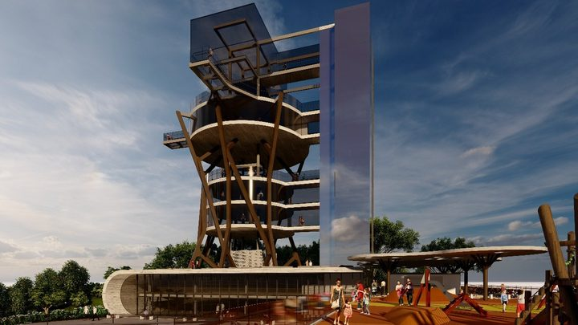

Itapema · TurismoItapema põe Parque das Capivaras e Mirante do Encanto em concessão por 30 anos
Como os dois editais nasceram, em agosto.
Os dois editais de concessão de turismo que Itapema abriu em agosto terminaram sem nenhuma proposta. A Prefeitura revogou os dois no mesmo dia, com a mesma frase: o lote "restou deserto". Fomos ao Diário Oficial dos Municípios contar quantas licitações da cidade acabaram assim em 2026, e são quatro. No dia seguinte à publicação, os escoteiros que ocupam o Parque das Capivaras há 14 anos foram à Tribuna do Povo pedir ajuda para achar uma nova sede.
Em 30 segundos · Modo de Leitura, formato original Santa Informa
As duas concessões de turismo de Itapema caíram.
Eram o Parque das Capivaras, na Meia Praia.
E o Mirante do Encanto, no Canto da Praia.
As duas previam contrato de 30 anos.
Ninguém apresentou proposta em nenhuma das duas.
A Prefeitura revogou os dois processos.
Os extratos foram assinados em 7 de outubro.
Saíram no Diário Oficial em 8 de outubro.
Os dois trazem a mesma frase.
"Considerando que o Lote 1 restou deserto".
Quem assinou foi o secretário Marcelo Marcio Correia.
Ele é o secretário de Governo e Infraestrutura.
O edital do Parque saiu em 5 de agosto.
A janela para propor foi de 54 dias.
Fechou às 14h de 29 de setembro.
O do Mirante saiu em 11 de agosto.
A janela dele foi de 50 dias.
Fechou às 14h de 1º de outubro.
A comissão dos dois já estava montada em julho.
Foi a Portaria 256, de 31 de julho.
Contamos as licitações desertas de 2026 da cidade.
No Diário Oficial são quatro no ano.
Essas duas concessões são metade delas.
As outras duas saíram em 4 de março.
Uma era a ciclovia da marginal da BR-101.
A outra, a reforma da Secretaria de Planejamento Urbano.
As quatro eram concorrência eletrônica.
No dia 9 os escoteiros foram à Câmara.
O Grupo Escoteiro Costa Esmeralda usou a Tribuna do Povo.
Eles atendem cerca de 150 pessoas.
A idade vai de 5 a 22 anos.
Estão no Parque das Capivaras há 14 anos.
Pediram ajuda para achar uma nova sede.
Citaram o projeto público-privado previsto para o local.
A sede deles está escrita em lei municipal.
É a Lei 4917, de 1º de abril de 2026.
Ela diz: sede "no Parque das Capivaras".
Entre essa lei e o edital foram 126 dias.
Os extratos não dizem se haverá novo edital.
Nem por que faltou interessado.
TurismoPublicada em Redação Santa Informa
As duas concessões de turismo que Itapema abriu em agosto terminaram sem uma única proposta, e a Prefeitura revogou as duas no mesmo dia. Os extratos saíram no Diário Oficial dos Municípios em 8 de outubro, assinados no dia 7 pelo secretário municipal de Governo e Infraestrutura, Marcelo Marcio Correia, com a mesma frase: "Considerando que o Lote 1 restou deserto". Uma era do Parque das Capivaras, na Meia Praia. A outra, do Mirante do Encanto, no Canto da Praia. As duas previam 30 anos de contrato, com a empresa pagando pela outorga, assumindo a obra e ficando com a receita do espaço.
O edital do Parque saiu em 5 de agosto e recebia proposta até as 14h de 29 de setembro, com os lances um minuto depois. Deu 54 dias de janela. O do Mirante saiu em 11 de agosto, aberto até as 14h de 1º de outubro, ou 50 dias. A comissão especial dos dois processos já estava montada desde julho, pela Portaria 256. Passada a hora, não havia o que abrir. A revogação do Parque veio 8 dias depois da sessão vazia, e a do Mirante, 6 dias. As contas de prazo são nossas, sobre as datas dos editais.
Procuramos no Diário Oficial todos os atos da Prefeitura de Itapema publicados em 2026 com a expressão "restou deserto". São quatro, e estas duas concessões são metade. Os outros dois saíram no mesmo 4 de março: a ciclovia na marginal leste da BR-101, entre os quilômetros 148+900 e 150+000, e a reforma do prédio da Secretaria de Planejamento Urbano. As quatro eram concorrência eletrônica, modalidade das contratações maiores. Em agosto nós contamos a abertura destes editais e anotamos que o resultado se decidiria nos anexos. Ele se decidiu antes: não apareceu quem disputasse.
No dia seguinte à publicação, o Grupo Escoteiro Costa Esmeralda usou a Tribuna do Povo da Câmara. O grupo atende cerca de 150 pessoas de 5 a 22 anos e está há 14 anos no Parque das Capivaras. Pediu apoio dos vereadores para encontrar uma nova sede, citando a chance de deixar a área por causa de um projeto público-privado previsto para o local. Falou pelo grupo Rodrigo Vigano, que preside a entidade.
O endereço deles não é arranjo informal. A Lei 4917, de 1º de abril de 2026, atualizou a lei de 2000 que declara o grupo de utilidade pública municipal e registrou que a entidade tem sede "no Parque das Capivaras, neste Município". Entre essa lei e o edital que pôs o parque em concessão passaram 126 dias, conta nossa.
O resumo de 30 segundos está no topo e a versão completa é o texto acima. Aqui ficam as três leituras da casa sobre o mesmo assunto.
Clara, a otimista
Tem um lado bom nessa história que passa despercebido: o parque continua público, e continua inteiro. Ninguém perdeu nada. A cidade testou o mercado, o mercado não respondeu desta vez, e o espaço segue sendo da população enquanto a Prefeitura pensa no próximo passo. Isso é bem diferente de um contrato ruim assinado às pressas só para dizer que saiu.
E olha a coincidência boa: a mesma semana que derrubou a concessão trouxe os escoteiros ao plenário. Agora o assunto está na mesa dos vereadores com tempo para ser resolvido, não com a máquina já andando. Cento e cinquenta crianças e jovens numa cidade que cresce rápido é patrimônio, e patrimônio que se cuida antes do aperto costuma sobreviver. Dá para desenhar um projeto novo que já nasça sabendo quem mora ali dentro.
Seu Prudêncio, o criterioso
Merece atenção o fato de as duas terem dado deserto. Uma concorrência vazia pode ser azar de calendário, mas duas no mesmo ciclo, com janelas de cinquenta e poucos dias cada, sugere que alguma premissa do estudo não bateu com o apetite de quem investe. Vale acompanhar qual: pode ser o valor da outorga, pode ser o tamanho do investimento exigido na frente, pode ser a conta de trinta anos não fechando. O município tem os estudos na mão e consegue responder isso sem contratar ninguém.
O prazo também pede olho. De 5 de agosto a 7 de outubro foram 63 dias entre abrir o edital do Parque e revogá-lo, e isso é tempo de equipe trabalhando: comissão designada por portaria, publicação, remessa ao Tribunal de Contas, errata. Repetir o mesmo desenho e esperar resultado diferente sai caro em hora de servidor. Uma sugestão útil é fazer uma consulta de mercado antes do próximo edital, que é instrumento previsto e barato.
Dito isso, a Prefeitura agiu certo no encerramento. Deu deserto, revogou em poucos dias, publicou no Diário com a razão escrita na frase. Processo que morre e fica pendurado meses é bem pior que processo que morre e é sepultado na semana seguinte. E a tentativa em si foi legítima: buscar dinheiro privado para revitalizar equipamento turístico é caminho previsto em lei e usado no litoral inteiro.
Caco, o sarcástico
Trinta anos de um parque inteiro na Meia Praia, com projeto desenhado e projeção bonita, e não apareceu ninguém. Em Itapema, onde metro quadrado vira assunto de almoço de família, conseguimos o raro feito de oferecer um pedaço da cidade e ouvir o silêncio.
Reclamação registrada: li os dois extratos de revogação esperando um parágrafo de explicação e achei uma frase. "Considerando que o Lote 1 restou deserto." É a redação mais econômica do ano, e olha que o ano teve concorrência.
Mas tá bom porque o parque continua lá. E os escoteiros, que estão no lugar há catorze anos e têm a sede escrita em lei, ganharam um tempinho a mais de sossego. Tem jeito pior de não acontecer nada.
Fontes: a revogação do Parque das Capivaras, a frase "Considerando que o Lote 1 restou deserto", a data de 7 de outubro e o nome do secretário estão no Extrato de Revogação do Processo nº 83/2026, publicado pela Prefeitura de Itapema no Diário Oficial dos Municípios de Santa Catarina em 8 de outubro de 2026, edição 5263. A revogação do Mirante do Encanto está no Extrato de Revogação do Processo nº 84/2026, da mesma data. Baixamos e lemos os dois documentos originais em 10 de outubro. As datas de publicação, os prazos de proposta e o prazo de 30 anos estão nos extratos dos editais, a Concorrência Pública 03.002.2026, de 5 de agosto, e a Concorrência Pública 03.003.2026, de 11 de agosto. A comissão especial dos dois processos está na Portaria nº 256, de 31 de julho de 2026. A contagem de quatro atos da Prefeitura de Itapema com a expressão "restou deserto" em 2026 é nossa, feita na busca do Diário Oficial dos Municípios em 10 de outubro, e os dois atos de 4 de março são os de número 8061401, da ciclovia da BR-101, e 8061244, da reforma da Secretaria de Planejamento Urbano. O pedido de nova sede, as cerca de 150 pessoas de 5 a 22 anos, os 14 anos no parque e o nome de Rodrigo Vigano estão na nota Tribuna do Povo: Escoteiros fazem apelo por nova sede em Itapema, publicada pela Câmara de Vereadores de Itapema em 9 de outubro de 2026. A sede registrada no Parque das Capivaras e a presidência estão no texto da Lei nº 4917, de 1º de abril de 2026, que lemos no arquivo original. A abertura dos dois editais está na nossa matéria de 18 de agosto. As janelas de 54 e 50 dias, os intervalos de 8 e 6 dias, os 63 dias entre edital e revogação e os 126 dias entre a Lei 4917 e o edital são contas nossas sobre as datas dos documentos.

Itapema · TurismoComo os dois editais nasceram, em agosto.
 Itapema · Infraestrutura
Itapema · InfraestruturaO outro jeito de a cidade passar área pública à iniciativa privada.
Outra obra grande da Meia Praia que não saiu do papel.